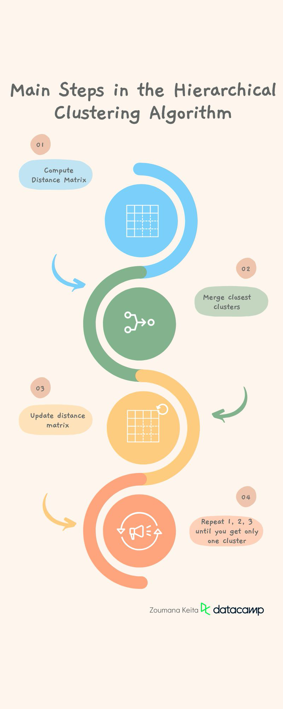
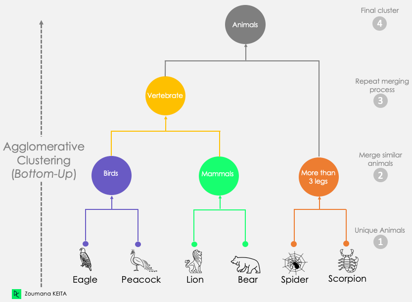
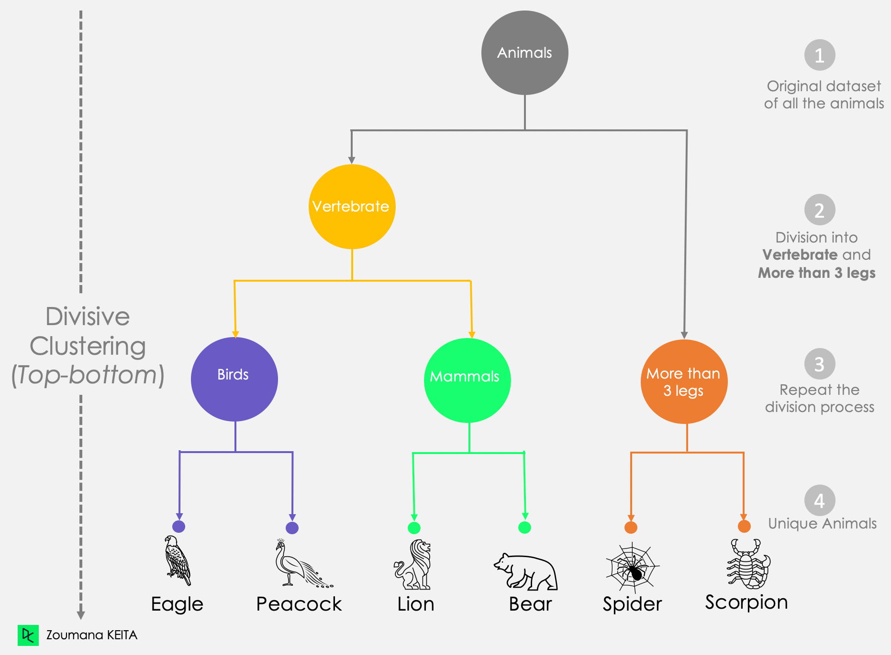
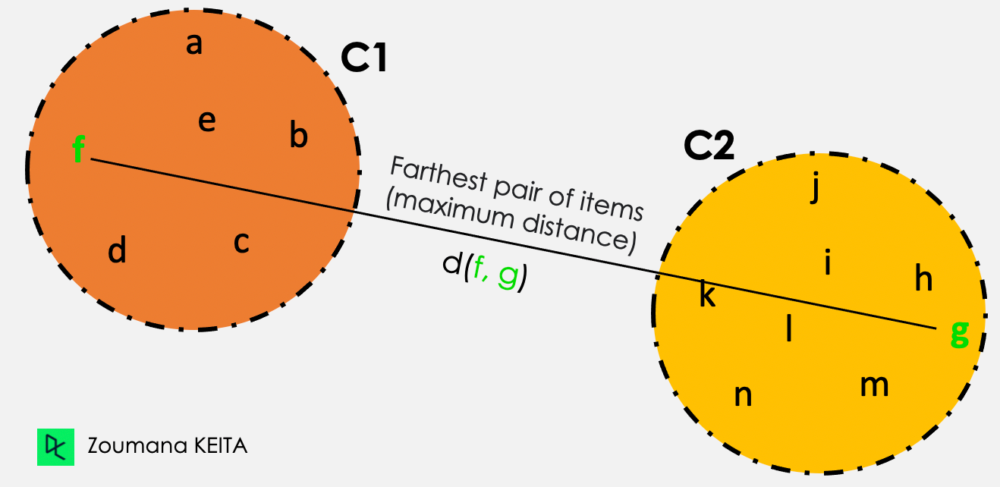
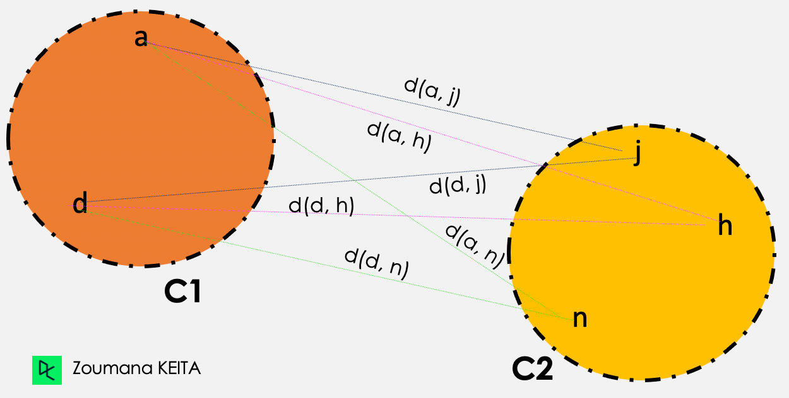

Hiyerarşik Kümelemeye Giriş
Hiyerarşik Kümelemeye Giriş
DataCamp’teki “An Introduction to Hierarchical Clusteringin Python” adlı makaleden alınmıştır.
Hiyerarşik Kümelemenin Tanımı
Hiyerarşik kümeleme yaklaşımı, daha önce tanımlanmış kümelere dayalı olarak ardışık kümelerin belirlenmesine dayanır. Bu teknik, verileri dendrogramlar olarak adlandırılan bir kümeler ağacında gruplamayı amaçlar ve altta yatan kümeler arasındaki hiyerarşik ilişkiyi grafiksel olarak temsil eder.
Hiyerarşik Kümelemenin Diğer Kümeleme Teknikleriyle Karşılaştırılması
Hiyerarşik kümeleme güçlü bir algoritmadır, ancak tek algoritma değildir ve her kümeleme türü kendi avantaj ve dezavantajlarıyla birlikte gelir.
K-means ve model tabanlı kümeleme gibi diğer kümeleme türleriyle nasıl karşılaştırıldığını anlamaya çalışalım. Çok daha fazla teknik var, ancak bunlar ikisi, hiyerarşik kümelemeye ek olarak, yaygın olarak kullanılır ve diğerlerini daha iyi anlamak için bir çerçeve sağlar.
Makine öğreniminde kümeleme hakkında daha fazla bilgiyi, beş temel kümeleme algoritmasını kapsayan ayrı makalemizde bulabilirsiniz.
Hiyerarşik kümeleme ve K-Means kümeleme karşılaştırması
Hiyerarşik kümelemenin aksine, K-means kümeleme, orijinal veri noktalarını kullanıcının önceden belirlediği “K” gruba veya kümeye ayırmayı amaçlar.
Genel fikir, tüm öznitelikler (değişkenler veya özellikler) üzerinden tüm noktaların merkezlerden karesel Öklid mesafesini minimize eden kümeler aramak ve bu bireyleri yinelemeli bir şekilde birleştirmektir.
“Scikit-learn ile Python’da K-means Kümeleme” öğreticimiz, ilginç bir vaka çalışmasıyla K-means kümelemenin iç işleyişini anlamanıza yardımcı olacaktır.
Faydaları
- Hiyerarşik kümelemeye kıyasla hesaplama açısından verimlidir ve büyük veri setlerini analiz etmek için kullanılabilir.
- K-means anlaşılması ve uygulanması daha kolaydır.
Dezavantajları
- Hiyerarşik kümelemeden daha az esnektir çünkü kullanıcıyı küme sayısını önceden belirtmeye zorlar, bu da bazı durumlarda açık olmayabilir.
- Sonuç kararlı değildir ve aynı veri seti için bir yinelemeden diğerine değişir.
- Aykırı değerlere karşı daha duyarlıdır çünkü verilerdeki aykırı değerlerin kullanımı kümenin ortalamasını etkiler.
- Hem k-means hem de hiyerarşik kümeleme, kategorik verileri doğrudan işleyemez ve sürekli olmayan veya çok büyük varyansa sahip verilerle iyi çalışmayabilir.
Sınırlamalarına rağmen, k-means kümeleme hala kullanım kolaylığı ve hesaplama verimliliği nedeniyle popüler bir yöntemdir. Sıklıkla diğer kümeleme tekniklerinin performansını karşılaştırmak için bir referans noktası olarak kullanılır.
Model tabanlı kümeleme
Hem K-means hem de hiyerarşik kümeleme teknikleri, veri setindeki tüm noktalar arasındaki mesafeleri temsil etmek için bir uzaklık matrisi kullanır. Öte yandan, model tabanlı kümeleme, verilerdeki kümeleri tanımlamak için istatistiksel teknikler uygular. Genel süreç aşağıdaki gibidir:
- Kullanılacak istatistiksel modele karar verin ve küme sayısını seçin.
- Modeli verilere uygulayın.
- Model parametrelerine göre kümeleri belirleyin.
Faydaları
- Model tabanlı kümeleme, farklı küme türlerini tanımlamak için farklı modellerin kullanılmasına izin verdiği için hiyerarşik kümelemeden daha esnektir.
- Karmaşık şekillere veya yapılara sahip veriler üzerinde daha iyi çalışır.
Dezavantajları
- Özellikle büyük veriler için hesaplama açısından hiyerarşik kümelemeden daha pahalıdır.
- Model seçimi nihai sonucu etkileyebileceğinden, istatistiksel modelleme tekniklerinin daha iyi anlaşılmasını gerektirir.
- K-means kümelemeye benzer şekilde, küme sayısının önceden belirtilmesini gerektirir.
Hiyerarşik Kümelemenin Uygulamaları
Hiyerarşik kümeleme, günlük hayatımızda biyoloji, görüntü işleme, pazarlama, ekonomi ve sosyal ağ analizi dahil (ancak bunlarla sınırlıolmamak üzere) çeşitli uygulamalara sahiptir.
Biyoloji
DNA dizilerinin kümelenmesi, biyoinformatiğin en büyük zorluklarından biridir.
Biyologlar, organizmaları taksonomik gruplara sınıflandırmak için organizmalar arasındaki genetik ilişkileri incelemek üzere hiyerarşikkümelemeyi kullanabilirler. Bu, altta yatan ilişkilerin hızlı analizi ve görselleştirilmesi için faydalıdır.
Görüntü işleme
Görüntü işlemede, renk, yoğunluk veya diğer özellikler açısından bir görüntünün benzer bölgelerini veya piksellerini gruplandırmak içinhiyerarşik kümeleme gerçekleştirilebilir. Bu, görüntü segmentasyonu, görüntü sınıflandırması ve nesne tanıma gibi diğer görevler için faydalı olabilir.
Pazarlama
Pazarlama uzmanları, daha iyi pazarlama stratejileri ve ürün önerileri için müşterilerin satın alma alışkanlıklarına göre farklı müşteri türleri arasında bir hiyerarşi çizmek için hiyerarşik kümelemeyi kullanabilirler. Örneğin, perakendede farklı ürünler, düşük, orta veya yüksek harcama yapan müşterilere göre önerilebilir.
Sosyal ağ analizi
Sosyal ağlar, verimli bir şekilde kullanıldığında değerli bilgilerin harika bir kaynağıdır. Hiyerarşik kümeleme, grupları veya toplulukları belirlemek ve bunların birbirleriyle ve ağın bütünüyle olan ilişkilerini anlamak için kullanılabilir.
Hiyerarşik Kümeleme Algoritması
Bu bölümde üç ana kavrama bakacağız. Hiyerarşik algoritmanın adımları, iki tür hiyerarşik kümelemenin (aglomeratif ve bölücü) vurgulanması ve son olarak doğru mesafe ölçüsünü seçmek için bazı teknikler.
Hiyerarşik kümeleme algoritmasında yer alan adımlar
Hiyerarşik kümeleme algoritması, kümeler oluşturmak için mesafe ölçülerini kullanır. Bu oluşturma süreci aşağıdaki ana adımları içerir:

Eksik verileri kaldırarak ve verileri mümkün olduğunca temiz hale getiren ek görevler uygulayarak verileri ön işlemden geçirin. Bu adım, çoğu makine öğrenimi görevi için daha genel bir adımdır.
Öklid mesafesi, Manhattan mesafesi veya kosinüs benzerliği gibi belirli bir mesafe metriği kullanarak her veri noktası çifti arasındaki mesafeyi içeren mesafe matrisini hesaplayın. Ancak varsayılan mesafe metriği Öklid mesafesidir.
Mesafe olarak en yakın olan iki kümeyi birleştirin.
Mesafe matrisini yeni kümelere göre güncelleyin.
Tüm kümeler tek bir küme oluşturmak üzere birleştirilene kadar 1, 2 ve 3. adımları tekrarlayın.
Hiyerarşik kümeleme örnekleri
Aglomeratif ve bölücü kümelemeyi birbirinin aynası olarak düşünebiliriz. Her birinin nasıl çalıştığına, hiyerarşik kümeleme örneğine vegrafiksel görselleştirmeye daha yakından bakalım.
Aglomeratif hiyerarşik kümeleme
Bu ilk senaryo, yukarıda açıklanan yaklaşıma karşılık gelir. Her gözlemi tekil bir küme (yalnızca bir veri noktası içeren küme) olarak düşünerek başlar. Daha sonra yalnızca bir küme elde edilene kadar kümeleri yinelemeli olarak birleştirir. Bu süreç aşağıdan yukarıya yaklaşım olarak da bilinir.
Aşağıdaki örnekte gösterildiği gibi:
- Her hayvanı kendine özgü bir küme olarak düşünerek başlıyoruz.
- Ardından, bu benzersiz hayvanlardan benzerliklerine göre üç farklı küme oluşturuyoruz:
- Kuşlar: Kartal ve Tavus Kuşu
- Memeliler: Aslan ve Ayı
- Üçten fazla bacaklı hayvanlar: Örümcek ve Akrep
- En benzer iki kümeyi (Kuşlar ve Memeliler) birleştirerek Omurgalıkümesini oluşturmak için birleştirme işlemini tekrarlıyoruz.
- Bu adımdan sonra, kalan iki küme, Omurgalı ve Üçten fazla bacaklı, tek bir Hayvanlar kümesi oluşturmak üzere birleştirilir.

Aglomeratif Kümeleme Yaklaşımının Dendrogramı
Bölücü kümeleme
Öte yandan, bölücü kümeleme yukarıdan aşağıya bir yaklaşımdır çünkütüm veri noktalarını tek bir küme olarak düşünerek başlar. Daha sonra tüm veri noktaları benzersiz olana kadar onları ayırır.
Bu bölücü yaklaşım grafiğinden:
- Tüm hayvan veri setinin tek bir blok olarak düşünüldüğünü fark ediyoruz.
- Ardından, bu bloğu iki kümeye ayırıyoruz: Omurgalı ve 3’ten fazlabacaklı.
- Bölme işlemi, benzersiz hayvanlara ulaşana kadar önceden oluşturulan kümelere yinelemeli olarak uygulanır.

Bölücü Kümeleme Yaklaşımının Dendrogramı
Doğru mesafe ölçüsünü seçmek
Mesafe ölçüsü seçiminiz, kümelemede kritik bir adımdır ve çözmeye çalıştığınız probleme bağlıdır. Aşağıdaki senaryoyu düşünerek, öğrencileri şu gibi herhangi bir yaklaşıma göre kümeleyebiliriz:
- Menşe ülkesi
- Cinsiyet, erkek veya kadın
- Önceki akademik geçmiş
Bunların hepsi geçerli kümelerdir ancak anlamları farklıdır.
Öklid mesafesi çoğu kümeleme yazılımında en yaygın kullanılan mesafe olmasına rağmen, Manhattan mesafesi, Canberra mesafesi, Pearson veya Spearman korelasyonu ve Minkowski mesafesi gibi diğer mesafe ölçüleri de mevcuttur.
Kümeleri birleştirmeden önce nasıl ölçülür
Daha önce bahsedilen mesafeler öğelerle ilgilidir. Bu bölümde, onları birleştirmeden önce en yakın küme çiftini ölçmenin üç standart yolunu (kapsamlı değil) ele alacağız: (1) Tek bağlantı, (2) Tam bağlantı ve (3) Ortalama bağlantı.
Tek bağlantı
C1 ve C2 kümelerindeki öğeler arasındaki tüm ikili mesafelerden, tek bağlantı kümeler arasındaki mesafeyi minimum mesafe olarak alır.
Mesafe (C1, C2) = Min { d(i, j), burada öğe i C1 içinde ve öğe jC2 içinde}
İki kümeden gelen tüm öğe çiftleri arasından, yeşil renkle vurgulananlar minimum mesafeye sahiptir.

Tek bağlantı gösterimi
Tam bağlantı
C1 ve C2 kümelerindeki öğeler arasındaki tüm ikili mesafelerden, tam bağlantı kümeler arasındaki mesafeyi maksimum mesafe olarak alır.
Mesafe (C1, C2) = Max { d(i, j), burada öğe i C1 içinde ve öğe jC2 içinde}
İki kümeden gelen tüm öğe çiftleri arasından, yeşil renkle vurgulananlar maksimum mesafeye sahiptir.

Tam bağlantı gösterimi
Ortalama bağlantı
Ortalama bağlantı kümelemesinde, verilen iki küme C1 ve C2 arasındaki mesafe, iki kümedeki tüm öğe çiftleri arasındaki ortalama mesafelere karşılık gelir.
Mesafe (C1, C2) = Toplam{ d(i, j) } / Toplam mesafe sayısı

Ortalama bağlantı gösterimi
Ardından ortalama bağlantı kümelemesi şu şekilde gerçekleştirilir:
d(a,j) + d(a,h) + d(a,n) + d(d,j) + d(d,h) + d(d,n)
————————————————————–, burada Toplam mesafe sayısı = 6
Toplam mesafe sayısı